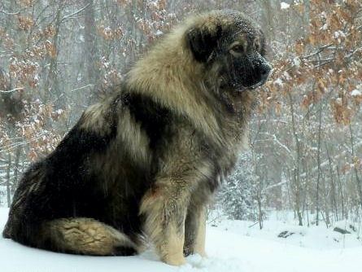
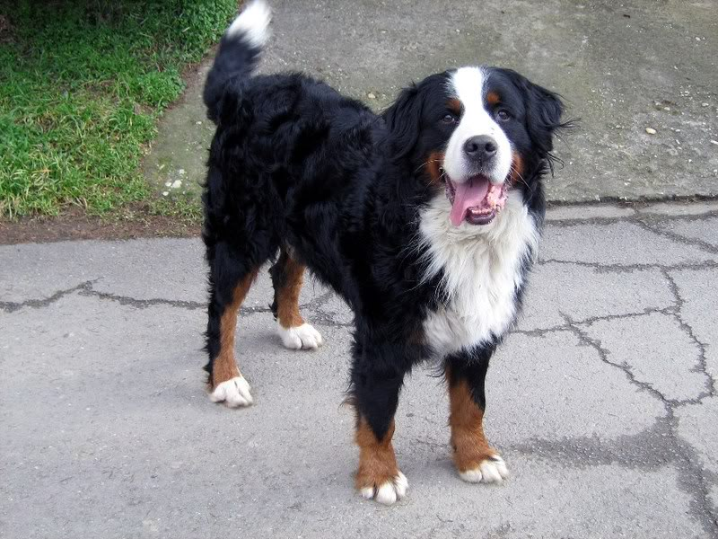
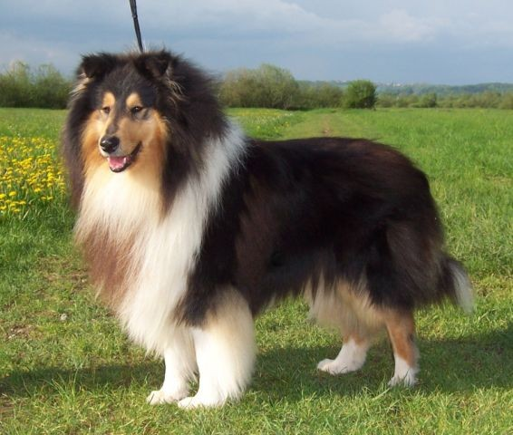

Šarplaninac

Na osnovu istorijskih podataka, vjeruje se da preci šarplaninca potiču od Molosa drevnog Tibeta, sa obronaka Himalaja.
Sa ove geografske teritorije, molosi su krenuli u beskrajna putovanja sledeći svoje gospodare. Šarplaninac je stigao na Balkan
sa legijama Aleksandra Velikog, gdje se i zadržao. Ime je dobio po planini gdje je najviše odgajan - Šar planina.
Prvi put je prikazan u Ljubljani 1926. godine. Šarplaninac je impresivan pas, čvrsto građen, ima široka i mišićava prsa, čvrste šape. Njegove lijepe bademaste oči
imaju dubok i miran pogled, pomalo melanholičan. Dlaka mu je udvostručena bujnom i načičkanom poddlakom.
Kratka je na glavi i na prednjem djelu nogu. Debeo rep je povijen, ali se ispravlja tokom akcije.
Od strane Međunarodne kinološke federacije (FCI) prvi put je priznat kao posebna vrsta ilirskog ovčara, tj. Ilirski ovčarski pas
(na osnovu starog imena regiona Ilirija), 1939. godine. A onda, 1957. godine, na zahtjev Jugoslovenskog kinološkog saveza (JKS),
Međunarodna kinološka federacija (FCI) promijenila je ime u Jugoslovenski ovčarski pas – Šarplaninac
Bernski planinski pas

Bernskog planinskog psa sve češće možemo videti i u našoj zemlji, i uprkos njegovim gabaritima i snazi, gotovo da nema deteta
i čoveka koji mu ne priđu da ga pomaze. Ovaj pas je uvek prijateljski nastrojen i sa širokim „osmehom na licu“.
Ukratko – reč je o nežnom divu kojeg svi obožavaju i koji malo koga ostavlja ravnodušnim.
Pripada skupini velikih pasa i veoma starih pasmina, a svoje poreklo, kao što mu i ime kaže, vuče iz Švajcarske, iz okoline Berna.
Preciznije, vekovima se uzgajao u podnožju švajcarskih Alpa oko Burgdorfa. Najpre je počeo da se uzgaja kao čuvar stada i gonič stoke.
Iako je danas najčešće voljeni kućni ljubimac, nadaleko je poznat i kao pas čuvar, pas za vuču i spasilac ljudi iz ruševina i lavina.
Kad je reč o karakteru bernskog planinskog psa, možemo govoriti samo u superlativu. On je pravi plišani meda među psima,
poznat kao prava maza i jedan je od najdruželjubivijih pasa na svetu. Veoma je lojalan, pažljiv, prepun ljubavi za svoju porodicu,
druge ljubimce u domu, a najviše prema – deci.
Škotski ovčar

Škotski ovcar potiče od starih vrsta pasa stočara. Koli je vekovima služio kao ovčarski pas u visokim predelima Škotske.
Raniji primerci ove rase bili su manji, sa širom glavom i njuškom i koristili su se za spašavanje iz vode, čuvanje stada.
Dobili su naziv po škotskoj ovci crne glave po imenu „koli“. Danas postoje dva tipa kolija: kratkodlaki i dugodlaki škotski ovčar.
Škotski ovčar je vrlo inteligentan pas. Lako ga je dresirati. Predstavlja psa velike lepote sa mirnim dostojanstvom, umiljat je, lako uči,
odan je i zahteva puno pažnje. Uglavnom je druželjubljiv sa ostalim psima. Prema vlasniku se ponaša zaštitnički, a sa decom je veoma pažljiv.
Prema poznatim osobama je vrlo prijateljski raspoložen.
Nije ni malo agresivan, ali može da bude oprezan sa ljudima ako oseti negativne vibracije ili psihičku nestabilnost. Aktivan je
i potrebno mu je mnogo kretanja. Osetljiv je na toplotu, pa mu u letnjem periodu treba obezbediti hlad i dovoljno vode.
Ovaj pas je veliku popularnost stekao kao zvezda u filmovima o cuvenom psu ,,Lesi se vraća kući“ koji je prvi put snimljen 1943. godine.